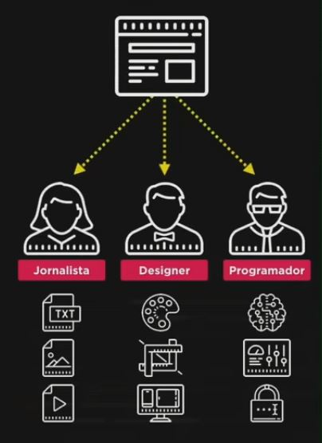

Conceito: Cliente x Servidor

Javascript funciona muito mais do lado do cliente
Construção de um web site
Necessário 3 profissionais
- Jornalista = Conteúdo = HTML
- Designer = Estilo = CSS
- Programador = Interação = JS

Desabilitar JS em sites
Vá até o DEVTOOLS > configurações > Disable JS
Modificar sites que usam JS

- 1.Para pegar o nome
- 2.Local para fazer as modificações
- 3.Local para digitar o código
Para alterar a cor do fundo do goole é necessário abrir o devtools, entrar em console e digitar: document.body.style.background = 'black'. Isso quer dizer o estilo(style) da cor do fundo(background) do corpo(body) do documento(document) é = preta('black')
Digitando alert('texto qualquer') o site envia uma notificação
Digitando document.querySelector('nome').style.filter ='grayscale(100%). Esse codigo vai deixar a imagem em branco e preto.
Digitando document.querySelector('nome').style.visibility = 'hidden'. Vai esconder a imagem
Digitando documento.querySelector('nome').innerText = 'Digite o seu texto'. Vai alterar o texto da manchete
Observação: Essas alterações alteram apenas o javascript que já chegou em sua maquina. Não interfere na plataforma do site, ou seja, outras pessoas que estão acesando o site não veem essa modificação
Questionario
Sabe a diferença entre um cliente e um servidor?
Para que serve HTML, CSS e javaScript
Cite 4 sites que fazem uso do JS
A evolução do JavaScript
Em meados de 1960 D. Eisenhower(EUA) desenvolveu uma agencia de tecnologia » DARPA
A ideia da DARPA foi criar uma rede para proteger os dados caso o local em que eles estivessem fossem atacados pela URSS
A rede criada pela DARPA recebeu o nome de ARPANET, protegida pelos militares inicialmente, mas com a sua grande expansão e conexão com outras pequenas redes ela passou a se chamar de internet.
Em 1993 em Genebra, Timothy Berners-Lee(CERN) foi responsavel pela tecnologia HTML, protocolo HTTP que se juntou ao conjunto de protocolos TCP/IP e também fundou a World Wide Web (WWW).
Neste mesmo ano foi criado nos EUA o Mosaic (navegador), criado pelo centro nacional de aplicações de supercomputadores (NCSA), pelo pesquisador Marc Andreesen. Depois de sair da NCSA ele se juntou com Jim Clark e fundaram uma empresa chamada Netscap e criaram o navegador superior, baseado do godzilla.
Em 1995 Brandon Erich se juntou Netscap e estava criando uma linguagem chamada Moca ou livescript, mas ao memso tempo outra linguagem estava tendo maior visibilidade, a liguagem JAVA, com isso o nome moca/livescript foi alterado para javascript, pois o nome JAVA estava em alta.
A liguagem javascript fez bastante sucesso e a Microsoft criou sua propria liguagem JScript e seu navegador Internet Explorer. A netscap resolveu padronizar a liguagem para não virar baçunça, com isso procurou a ECMA(EUR) e surgiu a linguagem javascript, que é uma padronização da liguagem.
Em 2002 encerrou a briga entre Netscap e Microsoft. Devido a Microsoft fornecer nagebador com a liguagem a netscap acabou falindo e se tornou o Mozilla Firefox, mas não conseguiu ter muito espaço devido a ascensão do Google Chrome que é o navegador mais famoso do mundo devido ao seu motor que faz rodar o javascript, conhecido como V8 que gera codigo JIT (just in time). e tem código aberto que pode ser modificado por qualquer pessoa e isto fez com que uma nova ferramenta chamada Node.js fosse criada em 2010
ECMAscript versões » 1.0 - 1997, 2.0 - 1998, 3.0 - 1999, ES5 - 2009, ES6 - 2015, ES - 2016, ES - 2017, ES - 2018
Tecnoligias que usam o javascript:
jQuery(mozzila)
Angular(google)
Reacht(facebook)
Vue(ex programar do google)
Electron(Github)
Ionic
Cordova
observação: antes de estudar essas tecnologias aprenda javascript.
Existem muitos jogos criados em javascript
Questionario
Qual empresa criou o javascript?
Java e Javascript possuem alguma relação?
O que ECMAScript tem a ver com JavaScript?
Sabia que o< programa Whatsapp desktop é criado em JavaScript?